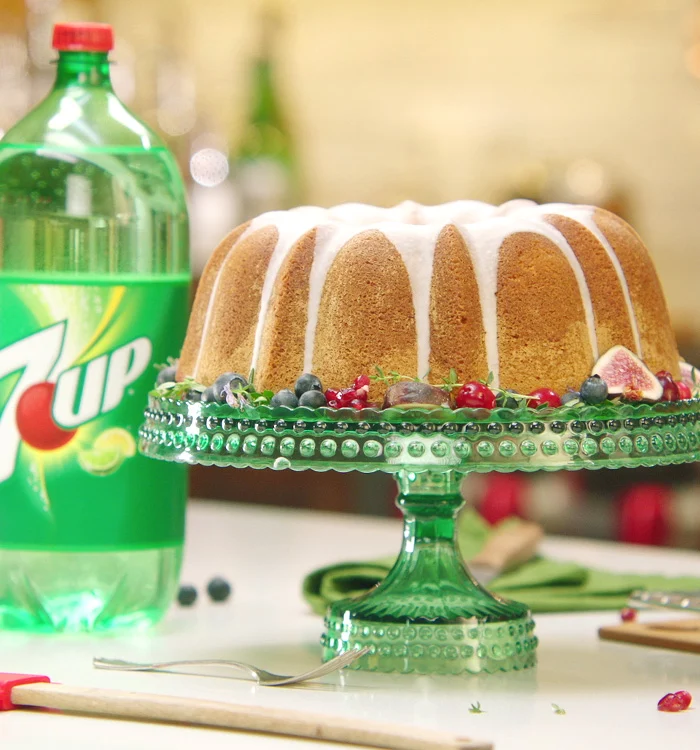

sprite cake

description
sure, this was a 7up cake recipe, but i prefer sprite!
ingredients
cake
- all-purpose flour (3 cups)
- granulated sugar (3 cups)
- unsalted butter (1.5 cups)
- sprite (0.5 cups)
- lemon juice (0.25 cups)
- eggs (5 large)
glaze
- powdered sugar (3.25 cups)
- sprite (0.25 cups)
- lemon juice (3 tbsp)
- vanilla extract (1 tsp)
steps
- preheat oven to 325°f
- grease a bundt pan with butter or oil
- using a mixer on medium-high, beat the butter and sugar until smooth and creamy
- mix in the eggs and lemon juice
- mix in the flour
- mix in the sprite for 1 minute
- pour batter into the pan and bake for 1 hour or until a toothpick in the center comes out clean
- let the cake cool in the pan for at least 30 minutes
- for the glaze, beat the powdered sugar, vanilla, lemon juice, and sprite on medium speed until smooth
- drizzle the glaze over the cake and enjoy!